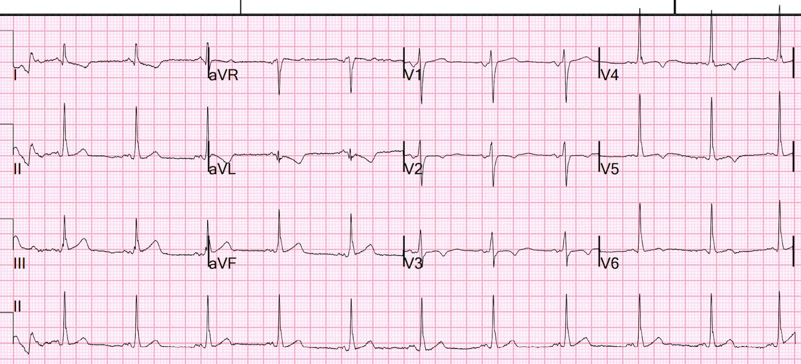
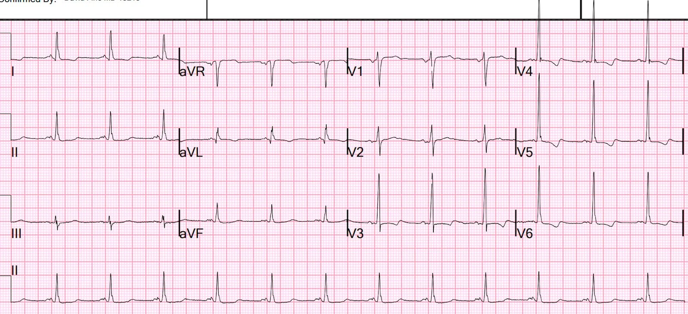
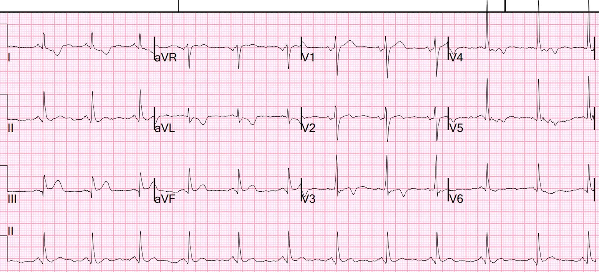
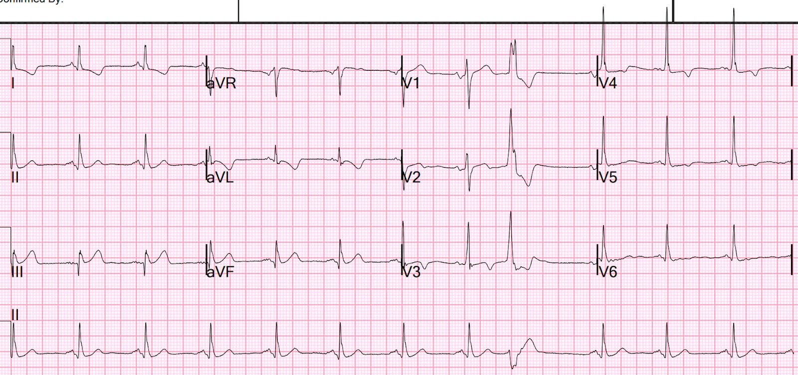
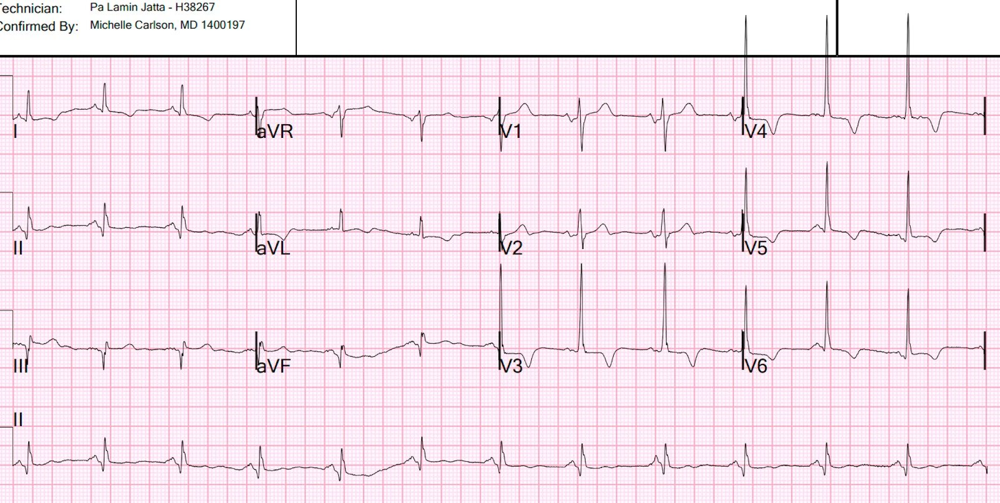
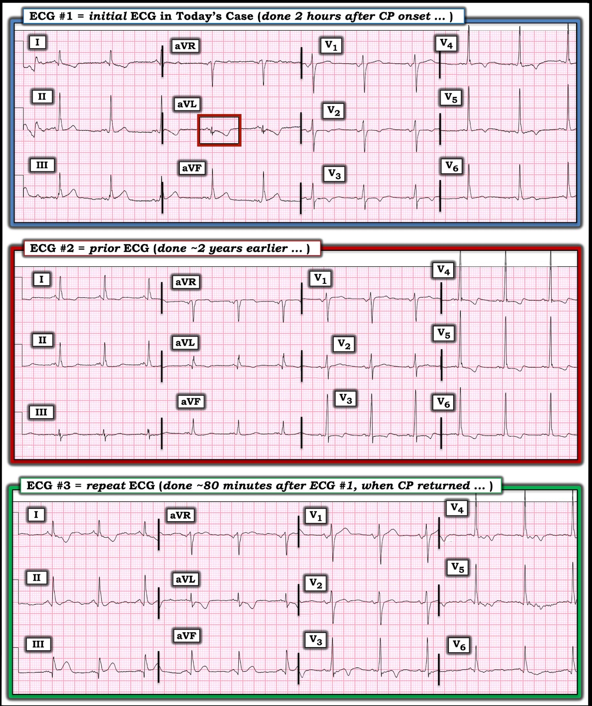

19/03/2023 — Nam giới khoảng 50 tuổi đau tức ngực 2 giờ
Bản dịch tiếng Việt của bài "A 50-Something Male with 2 hours of Chest discomfort" – Dr. Smith’s ECG Blog. Giữ nguyên toàn bộ 7 hình ảnh của bản gốc.
Điện tâm đồ được nhắn tin cho tôi theo thời gian thực, nhưng tôi không để ý đến tin nhắn cho đến khoảng một giờ sau khi nó đến.
“Nam 50 + tuổi. Bệnh sử đáng lo ngại, đã biết có bệnh động mạch vành (CAD)”. Ghi 2 giờ sau khi khởi phát đau:


Bạn nghĩ gì?
Đây là câu trả lời của tôi:
“Điện tâm đồ này trông đáng lo ngại. Trông giống nhồi máu cơ tim do tắc (Occlusion MI, OMI), nhưng tôi không chắc chắn 100%. Nhưng đến giờ chắc hẳn bạn đã có điện tâm đồ ghi lại. Tôi xem được không?”
Pendell Meyers cũng trả lời y hệt khi tôi gửi cho anh ấy.
Thuật toán AI PM Cardio cho kết quả “OMI với độ tin cậy cao”
Giải thích: Có ST chênh lên kín đáo ở các chuyển đạo dưới, với sóng T tối cấp ở III, ST chênh xuống (STD) soi gương ở aVL kèm sóng T đảo ngược ở aVL, cũng như sóng T đảo ngược ở V2, và đoạn ST dốc lên ở V5,6 với sóng T hai pha (lên-xuống).
Troponin I độ nhạy cao (hs troponin I) đầu tiên chỉ vừa phát hiện được, ở mức 4 ng/L.
Anh ấy gửi cho tôi một điện tâm đồ cũ từ 2 năm trước:


Giờ đã biết ST chênh lên (STE) là mới.
Điều này khiến điện tâm đồ đầu tiên có giá trị chẩn đoán.
Có hình ảnh LVH hoặc sóng T đảo ngược lành tính ở V3-V6.
Một điện tâm đồ ghi lại được thực hiện 80 phút sau điện tâm đồ đầu tiên, tức 200 phút sau khi khởi phát đau:


Có các thay đổi động (dynamic). Xác nhận rằng điện tâm đồ đầu tiên có giá trị chẩn đoán.
Phòng thông tim (cath lab) được kích hoạt. Bác sĩ can thiệp yêu cầu làm thêm một troponin nữa, kết quả trả về ngay sau đó là 66 ng/L.
Một điện tâm đồ khác được ghi trong lúc chờ kíp thông tim (lúc đó là ban đêm). Thời điểm này là 140 phút sau khi đến viện, tức 260 phút sau khi khởi phát đau:


Tương tự điện tâm đồ lúc 80 phút.
Chụp mạch vành:
Thủ phạm gây ra các thay đổi điện tâm đồ thành dưới và nhồi máu cơ tim không ST chênh lên của bệnh nhân là tắc cấp do huyết khối 100% ở RCA đoạn gần.
Động mạch được tái thông và đặt stent.
Siêu âm tim chính thức có cản âm bằng bọt khí:
Phân suất tống máu thất trái ước tính 57%.
Rối loạn vận động thành khu trú - dưới bên.
Rối loạn vận động thành khu trú - thành dưới.
Không đo thêm troponin nào nữa.
Đây là điện tâm đồ sáng hôm sau:


Giờ đã có sóng Q mới ở các chuyển đạo dưới.
Sóng T đảo ngược ở V3-V6 sâu hơn so với điện tâm đồ nền ở trên.
Bệnh nhân được chẩn đoán là “Non-STEMI.”
Với tôi, đó là một chẩn đoán vô nghĩa.
Đây là điểm cần học chính:
Ổ nhồi máu là do một động mạch bị tắc (nhồi máu cơ tim do tắc, OMI). Trong 30% OMI, không có ST chênh lên đáng kể. Chúng nên được gọi là nhồi máu cơ tim do tắc.
Theo truyền thống, các nhồi máu cơ tim do tắc (OMI) mà không phải STEMI được gọi là NonSTEMI. Chúng có ổ nhồi máu lớn và tử vong cao.
Tương tự, các nhồi máu cơ tim không do tắc (Non-OMI, hay NOMI) (động mạch không bị tắc) cũng được gán cùng một tên gọi (Non-STEMI) dù chúng khác nhau về bản chất: chúng có kích thước ổ nhồi máu nhỏ và tử vong THẤP HƠN NHIỀU so với NonSTEMI-OMI.
Gọi CẢ HAI bệnh lý rất khác nhau này bằng cùng một tên (“Non-STEMI”) chỉ vì một đặc điểm điện tâm đồ rất không chính xác (có hay không có ST chênh lên) che khuất thực tế của bệnh lý nền và mức độ nguy hiểm của nó.
Hãy gọi đúng tên của chúng: Nhồi máu cơ tim do tắc!
Những điểm cần học khác:
1. Học cách nhận ra OMI kín đáo
2. Thời gian từ cửa đến lúc tái thông phụ thuộc vào việc nhận ra những dấu hiệu kín đáo này.
3. Troponin đầu tiên không giúp làm giảm bớt mối lo của bạn
4. PM Cardio Bot (AI diễn giải OMI trên điện tâm đồ) chính xác đến kinh ngạc và chúng tôi hy vọng nó sẽ sớm có sẵn cho tất cả mọi người.
5. Tắc RCA có thể (và thường) ảnh hưởng đến thành bên, biểu hiện ở V5 và V6.
6. Thực tế, khi OMI thành dưới có biểu hiện ở V5,6, thì vẫn luôn có ST chênh xuống ở aVL (trong nghiên cứu của chúng tôi, điều này đúng ở 33/33 ca; lý do là aVL là chuyển đạo bên cao còn V5,6 hướng về phía dưới nhiều hơn)

==================================
BÌNH LUẬN CỦA TÔI, bởi KEN GRAUER, MD (19/3/2023):
==================================
Ca bệnh thú vị được Dr. Smith trình bày ở trên — nhấn mạnh những điểm quan trọng về mô hình OMI (OMI Paradigm). Tôi tập trung Bình luận của tôi vào một số khía cạnh bổ sung của cách tiếp cận này.
- Để tiện so sánh, trong Hình 1 — tôi đã đặt lại 3 bản ghi đầu tiên của ca hôm nay.
Điện tâm đồ số 1 có gì đáng chú ý?
VÌ SAO điện tâm đồ ban đầu của ca hôm nay ngay lập tức được Drs. Smith và Meyers nhận ra là “đáng lo ngại”? Suy nghĩ của tôi khi thấy bản ghi này ( = điện tâm đồ #1 trong Hình 1) — như sau:
-
- “Chẩn đoán cuối cùng” của ca hôm nay là “Non-STEMI” — mặc dù thông tim cho thấy tắc RCA đoạn gần. Theo Dr. Smith — chẩn đoán ca hôm nay theo cách đó cho thấy sự hiểu sai về sinh lý bệnh liên quan. Lý do điện tâm đồ ban đầu đáng lo ngại đến vậy — là vì nó đã gợi ý khả năng cao bị OMI ( = nhồi máu cơ tim do tắc (Occlusion-based MI)) ở người đàn ông khoảng 50 tuổi này, đến viện với bệnh sử đau ngực mới xuất hiện 2 giờ.
- Cần nhận thức rằng — việc đánh giá điện tâm đồ #1 bị phức tạp hóa bởi các điều đã biết: i) Bệnh nhân hôm nay có tiền sử bệnh động mạch vành (CAD) đã được ghi nhận; và, ii) Không có bản ghi cũ để so sánh vào thời điểm điện tâm đồ ban đầu được diễn giải. Dù vậy — 1 chuyển đạo trong điện tâm đồ #1 mà phải được coi là cấp tính cho đến khi chứng minh được điều ngược lại — là chuyển đạo aVL (trong hình chữ nhật ĐỎ ở điện tâm đồ #1). Bệnh nhân hôm nay đang bị đau ngực mới — sóng R ở chuyển đạo aVL nhỏ xíu, nhưng đứng trước nó là một sóng Q sâu không tương xứng (khi xét biên độ nhỏ của sóng R ở aVL) — đoạn ST ở chuyển đạo aVL có dạng vòm (coving), và sóng T đảo ngược ở chuyển đạo này rõ ràng “quá đầy đặn” (hypervoluminous) (và không tương xứng so với kích thước nhỏ của QRS ở chuyển đạo này).
-
- Ủng hộ giả định của chúng tôi rằng các thay đổi ST-T ở chuyển đạo aVL là cấp tính ở bệnh nhân đau ngực mới này — là hình ảnh ST-T đối xứng soi gương ngược chiều ở chuyển đạo III (tức là có ST chênh lên nhẹ nhưng thật — đoạn khởi đầu ST thẳng đuỗn — và sóng T tối cấp “mập” hơn mức bình thường ở chuyển đạo này).
- XIN NHẤN MẠNH: Bất thường ST-T cũng có ở hầu hết các chuyển đạo khác trong điện tâm đồ #1 — nhưng chúng rõ ràng kín đáo hơn, và khó khẳng định là “cấp tính” ở bệnh nhân đã biết có bệnh mạch vành này khi không có điện tâm đồ cũ để so sánh.
- BÌNH LUẬN CỦA TÁC GIẢ: Như Dr. Smith đã nêu — Thật đáng khích lệ khi thấy kết quả diễn giải bằng AI PMcardio cho điện tâm đồ #1 đưa ra chẩn đoán tắc mạch vành cấp với độ tin cậy cao (vì chương trình AI PMcardio đã nhận ra được các dấu hiệu tối cấp ở chuyển đạo III và aVL). Điều này báo hiệu một bước tiến vượt bậc về khả năng của lập trình máy tính dùng Trí tuệ Nhân tạo trong việc “học” — khi được “dạy” đúng cách (tức là được lập trình) — cách phát hiện tắc mạch vành cấp ở giai đoạn sớm của quá trình, ngay cả khi không có ST chênh lên.


Chúng ta học được gì từ bản ghi cũ?
Như Dr. Smith đã nêu — ngay khi có được một điện tâm đồ cũ của bệnh nhân hôm nay — chẩn đoán một biến cố tim cấp (có lẽ đang diễn ra) đã được xác nhận.
- XIN NHẤN MẠNH: Chúng ta không được cho biết hoàn cảnh ghi điện tâm đồ #2. Do đó — chúng ta không biết điện tâm đồ #2 là bản ghi “nền” ổn định — hay có thể đã được ghi trong một giai đoạn thiếu máu cục bộ ở bệnh nhân có tiền sử bệnh mạch vành đã biết này. Dù vậy — chúng ta biết rằng điện tâm đồ #2 là điện tâm đồ cuối cùng được lưu trong hồ sơ trước khi bệnh nhân này đến khoa cấp cứu (ED) vào ngày nhập viện. Do đó (như Dr. Smith đã nêu) — điều này xác nhận rằng các thay đổi ST-T ở các chuyển đạo chi của điện tâm đồ #1 là mới kể từ lần ghi điện tâm đồ gần nhất.
Xem kỹ hơn điện tâm đồ #1 so với điện tâm đồ #2:
Nhịp xoang có mặt ở cả điện tâm đồ #1 và điện tâm đồ #2, dù tần số tim ở điện tâm đồ #1 chậm hơn một chút. Điều quan trọng cần lưu ý là cả trục mặt phẳng trán, cũng như trình tự tăng tiến sóng R và biên độ QRS — đều khác nhau giữa 2 bản ghi. Dù vậy — tôi hoàn toàn đồng ý với Dr. Smith rằng so với bản ghi cũ — có thể thấy các thay đổi cấp tính trên điện tâm đồ #1:
- Sự thay đổi trục mặt phẳng trán giữa 2 bản ghi không thể được kỳ vọng gây ra sóng T đảo ngược “quá đầy đặn”, không tương xứng mà chúng ta thấy ở chuyển đạo aVL của điện tâm đồ #1. Nó cũng không thể gây ra các sóng T dương trông như tối cấp ở chuyển đạo III và aVF của điện tâm đồ #1, vốn rất dẹt trên bản ghi cũ.
Ở các chuyển đạo ngực của điện tâm đồ #2:
- Tiêu chuẩn điện thế của LVH được thỏa ở chuyển đạo V6 (sóng R ở V6 ≥18mm). Biên độ sóng R cũng cao bất thường ở chuyển đạo V4,V5. ST-T, đặc biệt ở các chuyển đạo ngực bên V4,V5,V6 — biểu hiện hình ảnh điển hình của “tăng gánh” thất trái (tức là điểm J chênh xuống nhẹ — với đoạn ST dốc xuống chậm, không đối xứng, kết thúc bằng một đoạn đi lên nhanh hơn trở về đường nền). [Để biết thêm “Quan điểm của tôi” về chẩn đoán LVH và “tăng gánh” trên điện tâm đồ — Xin mời xem Bình luận của tôi ở cuối trang trong bài đăng ngày 20 tháng Sáu năm 2020 của Dr. Smith’s ECG Blog].
- LƯU Ý #1: Dù LVH thường không gây ra điểm J chênh xuống nhẹ, ST dẹt, và phần cuối sóng T dạng xuống-lên (down-up) như thấy ở chuyển đạo V3 của điện tâm đồ #2 — đây vẫn có thể là dấu hiệu tồn tại lâu dài do LVH ở một bệnh nhân có sóng R cao đáng ngạc nhiên bắt đầu từ chuyển đạo V3.
- LƯU Ý #2: ST dạng vòm kèm sóng T đảo ngược nông nhưng đối xứng ở các chuyển đạo V2 đến V6 — thực sự phản ánh một mức ST chênh lên đã xảy ra ở các chuyển đạo V3 đến V6 của điện tâm đồ #1, khi xét rằng trên bản ghi cũ có ST chênh xuống nhẹ nhưng thật!
- ĐIỂM THEN CHỐT (PEARL): ST-T chênh lên hoặc chênh xuống mới thường khó đánh giá hơn nhiều khi bản ghi nền có bất thường ST-T do LVH kèm “tăng gánh” và/hoặc ở bệnh nhân có bất thường điện tâm đồ do bệnh mạch vành có từ trước (và bệnh nhân hôm nay có LVH và bệnh mạch vành đã biết).
Chúng ta học được gì từ điện tâm đồ #3?
Như Dr. Smith đã nêu — điện tâm đồ ghi lại của ca hôm nay ( = điện tâm đồ #3 — ghi 80 phút sau điện tâm đồ #1 khi đau ngực tái phát) — đã xác nhận chẩn đoán tắc mạch vành cấp nhờ các thay đổi ST-T động so với điện tâm đồ #1.
- Giờ đã có sóng Q ở từng chuyển đạo dưới trong điện tâm đồ #3.
- ST-T ở chuyển đạo III và aVF của điện tâm đồ #3 — giờ rõ ràng tối cấp hơn so với ở điện tâm đồ #1 (tức là giờ đã có ST chênh lên chắc chắn — với sóng T rõ ràng “mập ở đỉnh” hơn nhiều so với ở điện tâm đồ #1 ).
- Bằng chứng cho thấy các thay đổi này ở chuyển đạo III và aVF là thật — đến từ thay đổi ST-T động tương đương ở chuyển đạo aVL của điện tâm đồ #3 (giờ cho thấy điểm J chênh xuống — với sóng T “mập” hơn ở đáy).
- LƯU Ý #3: Tôi cho rằng điện tâm đồ #3 khu trú động mạch “thủ phạm” ở RCA đoạn gần vì: i) ST-T chênh lên và tính tối cấp giờ đã rõ rệt ở chuyển đạo III và aVF — nhưng không có ở chuyển đạo II; — ii) Thay đổi ST-T soi gương cũng rõ rệt tương đương ở chuyển đạo aVL (rõ hơn so với chuyển đạo I); — và, iii) Giờ có ST chênh lên nhẹ kèm sóng T dương nổi bật ở chuyển đạo V1 — điều mà ở bệnh nhân OMI do RCA gợi ý có thể có tổn thương thất phải cấp.
- Ở các chuyển đạo ngực khác — nhiễu khiến không thể kết luận về thay đổi ST-T ở chuyển đạo V4,V5 của điện tâm đồ #3 — nhưng ST dạng vòm và sóng T đảo ngược sắc nét ở chuyển đạo V3 (so với hình ảnh chuyển đạo V3 ở điện tâm đồ #1) — là một thay đổi động khác trên điện tâm đồ ghi lại này.
ĐIỀU CỐT LÕI về CA BỆNH hôm nay:
Năm 2023, với hiểu biết hiện nay của chúng ta — chẩn đoán ra viện được đưa ra cho ca này (tức là Non-STEMI) — là vô nghĩa và gây hiểu lầm. Thay vào đó — thông tim đã chứng minh có tắc cấp RCA đoạn gần.
- Trong bối cảnh bệnh sử lúc đến viện — chẩn đoán OMI cấp đã được gợi ý mạnh ngay khi điện tâm đồ ban đầu được ghi.
- Nhu cầu thông tim và PCI kịp thời đã được xác lập vững chắc ngay khi điện tâm đồ ban đầu này được so sánh với bản ghi cũ ( = điện tâm đồ #2).
- Điện tâm đồ theo dõi (ghi 80 phút sau điện tâm đồ #1, khi đau ngực tái phát) — có giá trị chẩn đoán OMI cấp, xóa bỏ nghi ngờ về tắc cấp cho đến khi thông tim kịp thời chứng minh điều ngược lại.
- Troponin ban đầu bình thường không phải là điều bất ngờ, và hoàn toàn không làm lung lay chẩn đoán OMI cấp.
- Lẽ ra phải ghi nhiều điện tâm đồ liên tiếp từ lâu trước mốc 80 phút sau điện tâm đồ ban đầu (Làm như vậy sẽ xác lập chẩn đoán tắc cấp sớm hơn bấy nhiêu).
- Chẳng có “phép màu” nào để chẩn đoán kịp thời OMI trong những ca như ca hôm nay — vì ngay cả AI (dùng chương trình diễn giải PMcardio) giờ cũng có thể xác lập “với độ tin cậy cao” từ điện tâm đồ ban đầu rằng OMI đang xảy ra.
- Tôi không hiểu vì sao có quá nhiều bác sĩ lâm sàng (kể cả bác sĩ tim mạch) — vẫn tiếp tục dùng thuật ngữ lỗi thời, vô nghĩa và gây hiểu lầm “Non-STEMI” — ngay cả sau khi thông tim đã chứng minh tắc cấp thực sự đã xảy ra.